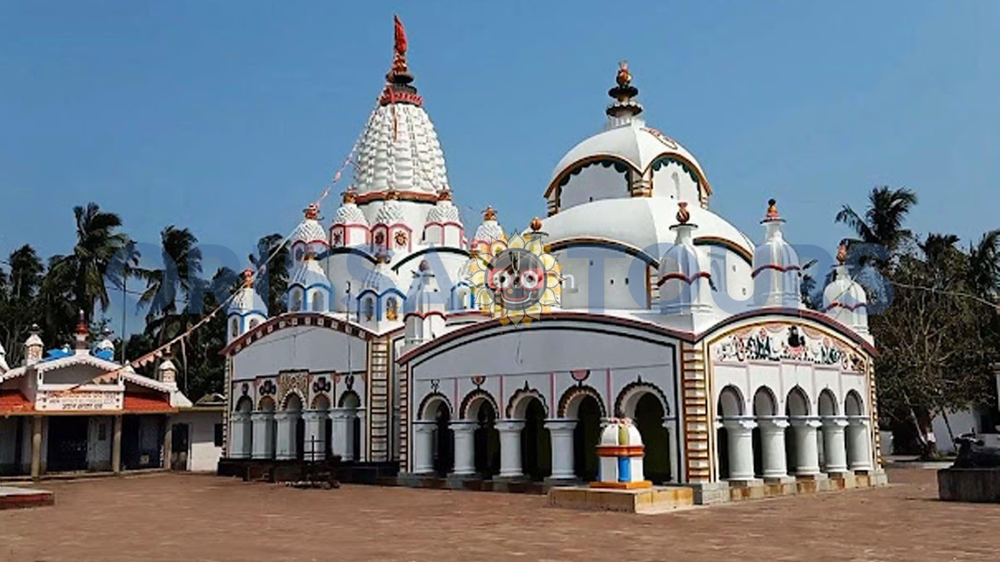
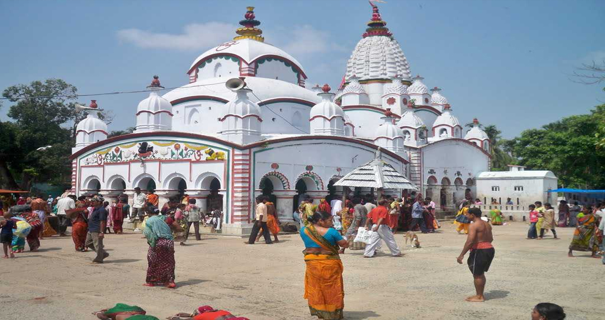

Chandaneswar Temple


Chandaneswar Temple
Chandaneswar Temple is a famous Shiva temple located in Chandaneswar, Baleswar district of Odisha, India.[1] A huge annual fair on the Pana Sankranti (Odia Hindu solar New Year), the first day of the Odia calendar, is celebrated on the premises. Many Indian pilgrims visit the temple during this period.
Location
Chandaneshwar is in Balasore district of Odisha. Regular transport is available from Jaleswar in Odisha and Digha in West Bengal.
Maha Bishuba Sankranti
The Odia new year Maha Bishuba Sankranti day is very famous around the premises of the shrine. Locally called Uda Parba, Nila Parba after worshiping Nilakanth Shiva, Chadaka Yatra. Half a million people gather around the shrine and fast for several days to fulfill their wishes. It was built in typical Kalinga Architecture style of Old Odisha temples
Chandaneswar is famous for Chandaneswar temple of Lord Siva Every year in the month of 'Chaitra' (from 14 March to 14 April) an Odisha famous "Chadak Mela/Chaitra Mela/Udaa". It continues for 13 days (13 Arghya to 1 Arghya discounting). The Bhaktas (devotees) accept paita (pabitrata). The Bhaktas with their 'manaskamana' come from all over the country. From last 5th Arghya to 3rd Arghya the Bhaktas increase in numbers. Near about 3 to 4 lakh of Bhaktas offer their Arghyas (prayer) at night only.
They fast the whole day not even swallowing their spit. Last 4th Arghya day "Kamina Baha" (marriage of Lord Siva with Kamina, daughter of demon Nila), second Arghyaday "Nila Parba" and the first Arghya day "Paata Parbha (Mala Chandani). As per the rigorous manasik point of view some Bhaktas prick their bodies and tongues with iron nails. The whole gathering is controlled by the Paata Bhakta and Odisha Government. After the Paata Parba the Bhaktas remove their Paitas after their last Arghya and float in the sea but the fair continues another seven or eight days more.
Chandipur is a resort town in Balasore District, Odisha, India. The town is located on the shore of Bay of Bengal and is approximately 16 kilometers from Balasore Railway Station. Chandipur beach is unique in a way that the water recedes up to 5 kilometers during the low tide. Due to its unique circumstances, the beach supports biodiversity. Horseshoe crab is also found here on the beach towards Mirzapur, the nearby fishing market and community at the confluence of the Budhabalanga River (Balaramgadi). It is a suitable picnic spot. One of Odisha Tourism's Panthanivas (guest house) is situated here.
Geography
Chandipur is located at 21.47°N 87.02°E.[1] It has an average elevation of 3 m (9.8 ft). This town is 51.330 acres (0.20773 km2) in size.[2] Chandipur beach can be submerged during high tide.
Normal Indian weather
Chandipur is located at 21.47°N 87.02°E.[1] It has an average elevation of 3 m (9.8 ft). This town is 51.330 acres (0.20773 km2) in size.[2] Chandipur beach can be submerged during high tide.
Normal Indian weather
Summer temperatures range 25–40 degrees Celsius, while the Winter range is 17–27 degree Celsius. Tourism season is typically from November to March.
Ministry of Defence
Chandipur is also the location of DRDO's only missile testing lab, i.e., the Integrated Test Range (ITR). A number of Indian missiles have been tested and launched from the ITR, including nuclear-capable Prithvi, Agni and Shaurya[3] ballistic missiles, as well as Akash and Barak 8 surface-to-air missiles.
Transport
Chandipur can be reached by travelling up to Baleswar by rail or road and then thereafter catching a bus, auto or taxi. Road access to Baleswar is via National Highway 16 (NH-16). Chandipur sea beach is 16 km away from Balasore railway station.
Also, one can avail the local guide & trekker service to see the major locations of Panchalinegeswar, Khirachora Gopinath temple, Chandipur Beach, Emami Jagannath temple, & Nilgiri Jagannath temple.
Food
Many types of seafood are available in hotels and restaurants. Fish is especially inexpensive here.